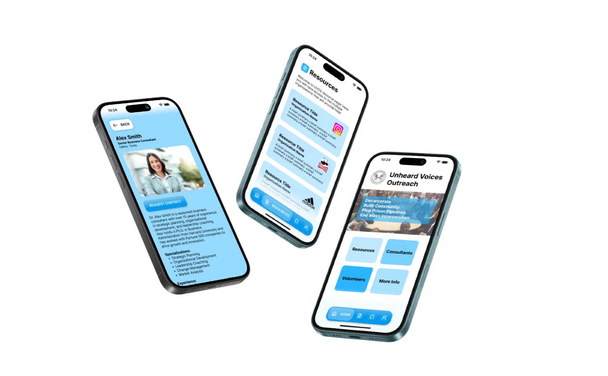
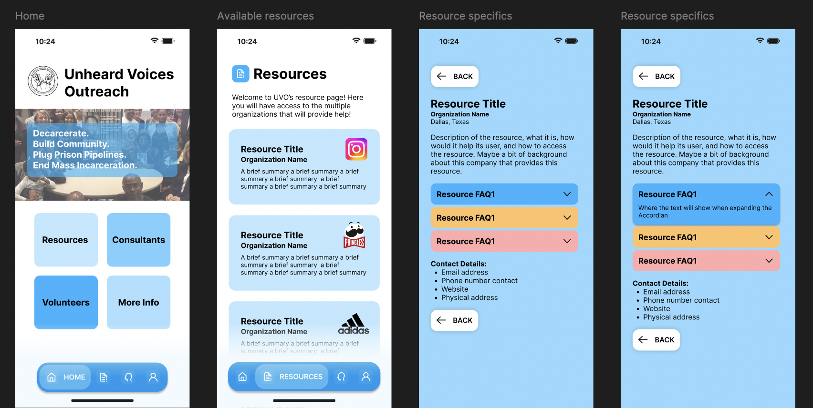
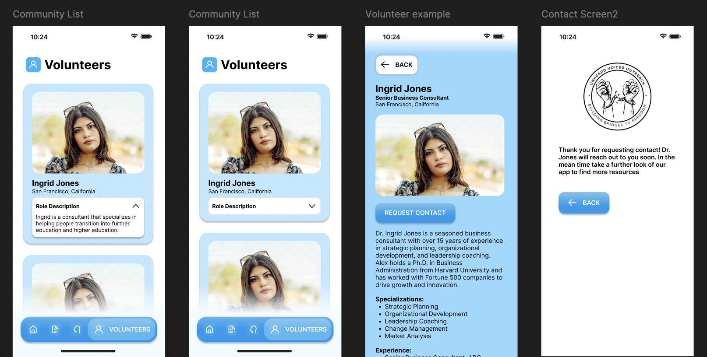
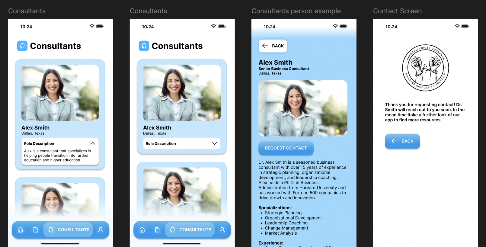

UVO is a nonprofit supporting formerly incarcerated individuals in reentry. This mobile app connects users with essential resources like housing, employment, and mental health services.
Prototyping Skills: Transformed specifications into user-friendly designs.
Brand Integration: Ensured design consistency with UVO’s brand.
Iterative Process: Moved from sketches to high-fidelity prototypes.



Copyright © Alison. Made with <3